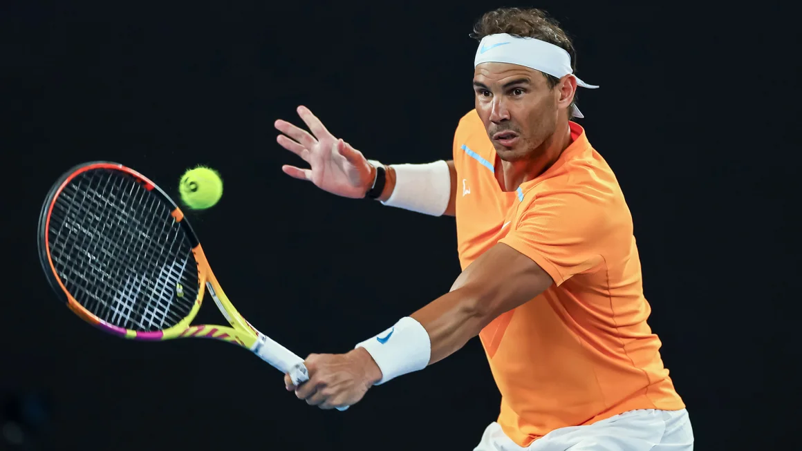
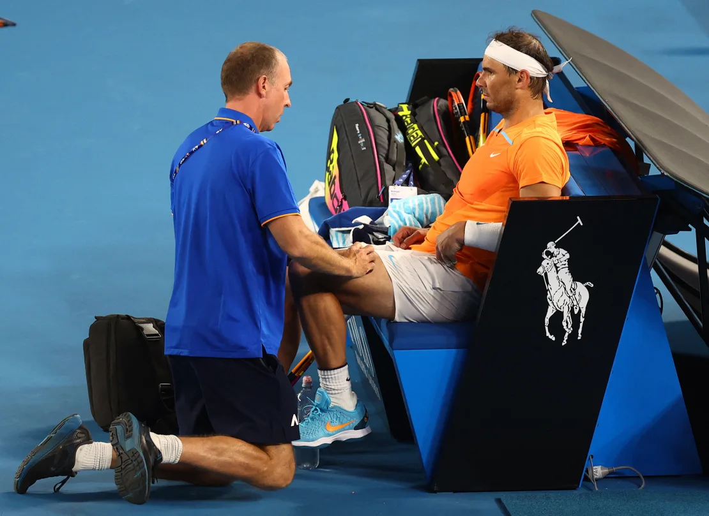

>> Rafael Nadal to make his tennis comeback in Brisbane next month

- Tennis great Rafael Nadal has said he will make his long-awaited return from injury at the Brisbane International in
January.
- “After a year away from competition, it’s time to come back,” Nadal said in a video posted on multiple social media
platforms Friday. “It will be in Brisbane the first week of January.”
- Nadal last competed at the Australian Open in January. Entering the tournament as defending champion after winning his
21st grand slam there in 2022, he was hampered by a hip problem and fell to a shock straight-sets defeat against
American Mackenzie McDonald in the second round.
- The Spaniard was initially expected to make his comeback later in the year, but announced during the clay court season
that he would miss the Madrid and Rome Masters, as well as the French Open.
- He had hip surgery in June, keeping him out of action for the remainder of the season.
- The 37-year-old has posted images and videos of himself on the court in recent weeks as he prepares for a competitive
comeback, and the tennis world has been anxiously anticipating the announcement of a return date.

- The Brisbane International, an ATP 250 event that serves as a warmup for the Australian Open, will mark the beginning of
what will likely be Nadal’s last year on Tour.
- “My idea and my motivation is to try to enjoy and try to say goodbye to all the tournaments that have been important for
me in my tennis career during [next] year, and just try to enjoy that, being competitive and enjoying being on the
court, something that today is not possible,” he said at a press conference in May.
- He is also widely expected to make a grand slam return at the Australian Open. In October, before Nadal had officially
announced a comeback, tournament director and Tennis Australia CEO Craig Tiley stated that Nadal would be among the
field at the 2024 edition of the competition.
- Nadal, a 22-time grand slam champion, will have to enter tournaments using either his injury protected ranking or a
wildcard entry as a result of tumbling down the rankings due to his absence.
- He is currently No. 662 in the world. In March, he fell out of the top ten for the first time in 17 years.
Source : Click here